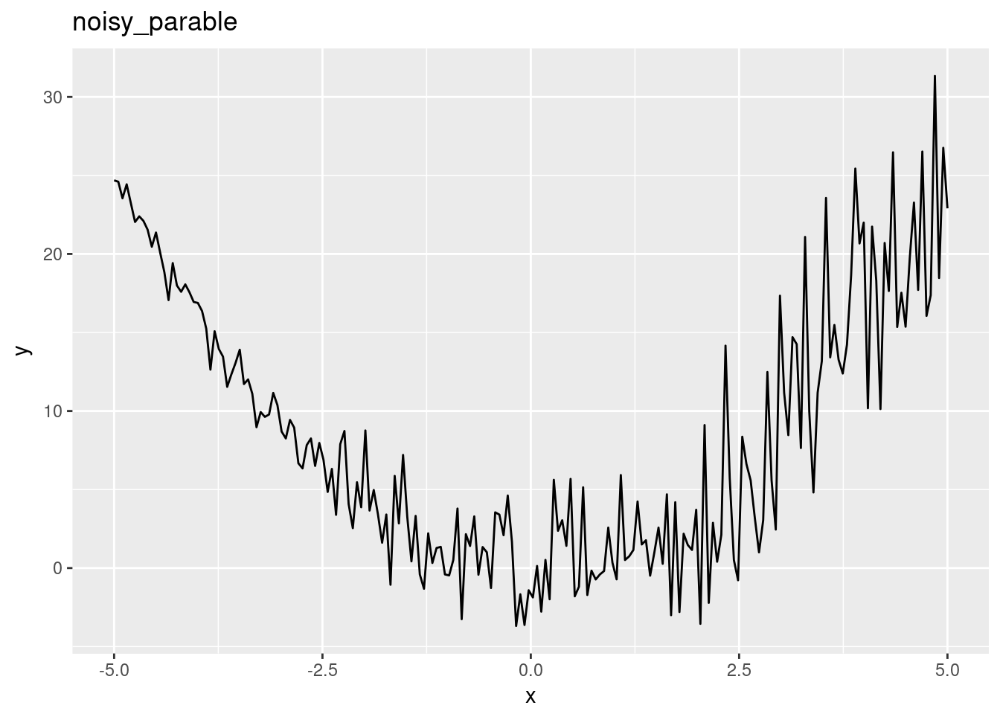
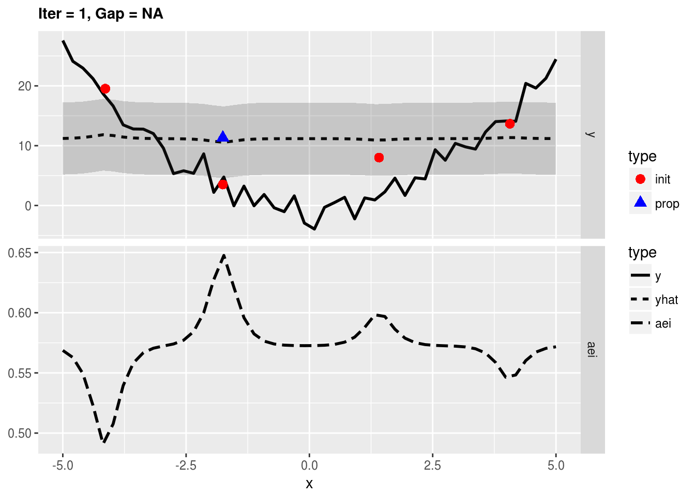
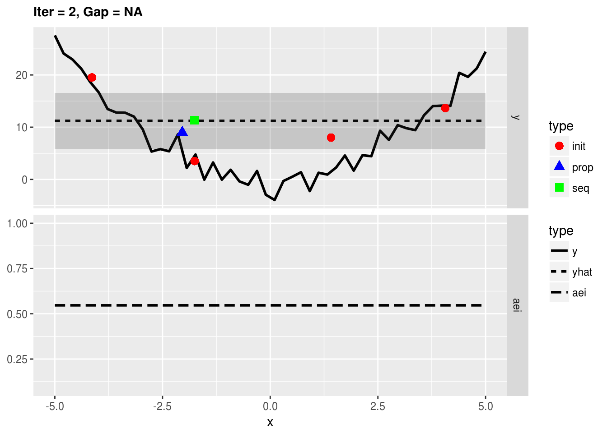
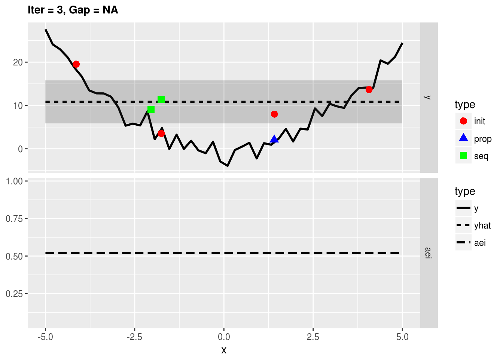
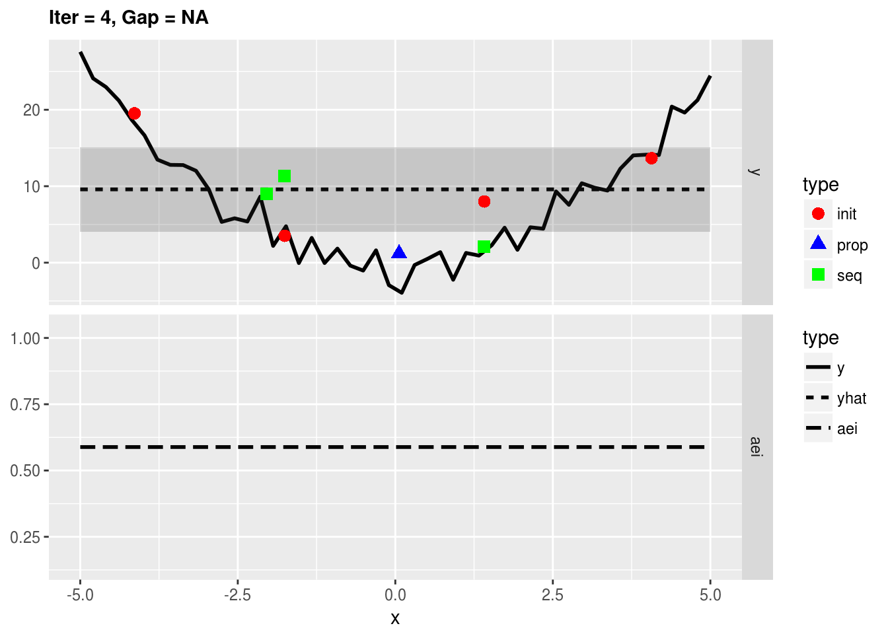
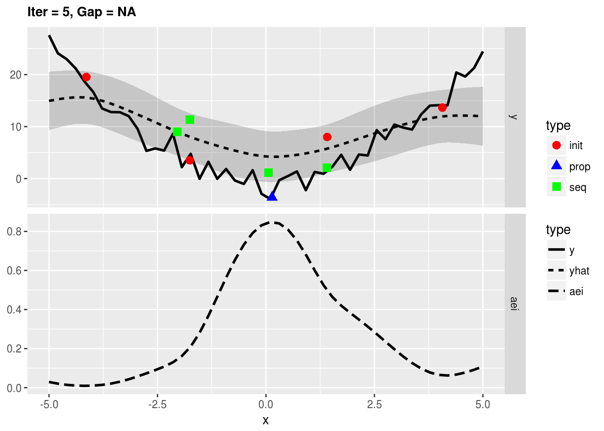
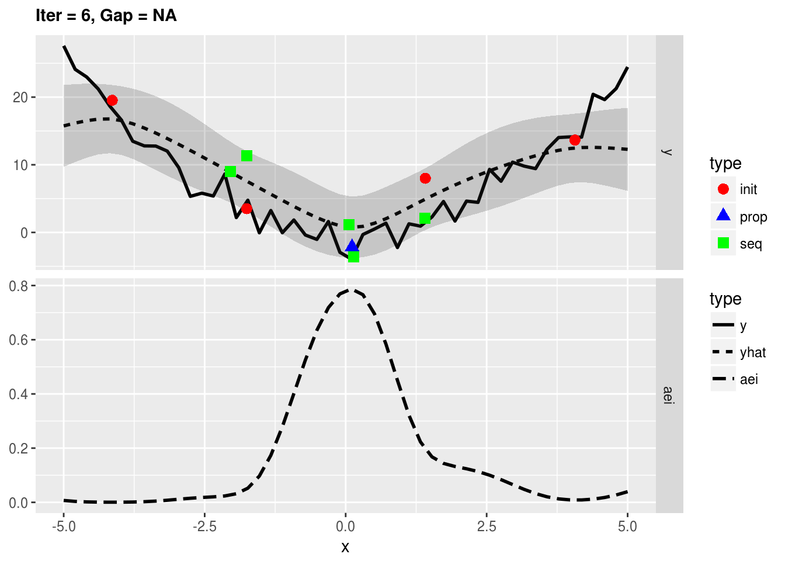

This vignette will give you a short overview about techniques in mlrMBO to handle optimization of noisy objective functions.
You can also try to reduce noise by using parallel evaluations of the same setting as explained in the Vignette about parallelization.
Like always let’s start with the function we want to optimize, but this time it will be noisy. Note that Kriging requires heteroscedasticity but slight dependencies of the variance on the x can be acceptable like in the following example:
library(mlrMBO)
library(ggplot2)
fun = function(x) {
rnorm(1, mean = x^2, sd = 0.1 + 0.1* x+5)
}
obj.fun = makeSingleObjectiveFunction(name = "noisy_parable", fn = fun, has.simple.signature = TRUE, par.set = makeNumericParamSet("x", 1, -5, 5), noisy = TRUE)
# visualize the function
autoplot(obj.fun, render.levels = TRUE, show.optimum = TRUE)
As you can see the function is more noisy for large values of x so that the true optimum at x=0 appears to be hidden. It is important to consider the way the final solution is generated (final.method). By default the best observed y value and its corresponding x-values are returned as the optimal solution but in the case of noisy optimization the lowest observed y value can just be the result of noise. Preferably the best predicted value of y is taken as the prediction of the surrogate reflects the mean and is less affected by the noise.
ctrl = makeMBOControl(final.method = "best.predicted", final.evals = 10)For noisy optimization we there are two infill.criteria that are recommended: * aei: Augmented Expected Improvement * eqi: Expected Quantile Improvement
ctrl = setMBOControlInfill(ctrl, crit = crit.eqi)ctrl = setMBOControlTermination(ctrl, iters = 6)For simplification we will let MBO automatically decide for the regression method and the initial design. As the parameter space is purely numeric MBO will use Kriging, which is exactly what we want.
# Kriging can create a lot of console output, which we want tu surpress here:
configureMlr(on.learner.warning = "quiet", show.learner.output = FALSE)
res = mbo(obj.fun, control = ctrl, show.info = FALSE)
res
## Recommended parameters:
## x=2.44
## Objective: y = 4.406
##
## Optimization path
## 4 + 16 entries in total, displaying last 10 (or less):
## x y dob eol error.message exec.time eqi error.model
## 11 2.440427 4.4603116 7 NA <NA> 0 NA <NA>
## 12 2.440427 -0.4012965 7 NA <NA> 0 NA <NA>
## 13 2.440427 11.1891347 7 NA <NA> 0 NA <NA>
## 14 2.440427 -2.2141046 7 NA <NA> 0 NA <NA>
## 15 2.440427 -4.0648537 7 NA <NA> 0 NA <NA>
## 16 2.440427 5.4177340 7 NA <NA> 0 NA <NA>
## 17 2.440427 9.3219022 7 NA <NA> 0 NA <NA>
## 18 2.440427 11.2333877 7 NA <NA> 0 NA <NA>
## 19 2.440427 4.2733438 7 NA <NA> 0 NA <NA>
## 20 2.440427 4.8437404 7 NA <NA> 0 NA <NA>
## train.time prop.type propose.time se mean tau
## 11 NA final_eval NA NA NA NA
## 12 NA final_eval NA NA NA NA
## 13 NA final_eval NA NA NA NA
## 14 NA final_eval NA NA NA NA
## 15 NA final_eval NA NA NA NA
## 16 NA final_eval NA NA NA NA
## 17 NA final_eval NA NA NA NA
## 18 NA final_eval NA NA NA NA
## 19 NA final_eval NA NA NA NA
## 20 NA final_eval NA NA NA NAAs you can see the optimization got fairly close to the minimum at x = 0 even though the noise in this area is pretty high.
(final.y = getOptPathY(res$opt.path, dob = 7))
var(final.y)
## [1] 4.4603116 -0.4012965 11.1891347 -2.2141046 -4.0648537 5.4177340
## [7] 9.3219022 11.2333877 4.2733438 4.8437404
## [1] 28.52414We can conduct the same optimization using the aei criterion. This time we will make use of exampleRun to visualize the optimization.
ctrl = setMBOControlInfill(ctrl, crit = crit.aei)
# Kriging can create a lot of console output, which we want tu surpress here:
configureMlr(on.learner.warning = "quiet", show.learner.output = FALSE)
res = exampleRun(obj.fun, control = ctrl, show.info = FALSE)
plotExampleRun(res, pause = FALSE)
res$mbo.res
## Recommended parameters:
## x=0.113
## Objective: y = -0.028
##
## Optimization path
## 4 + 16 entries in total, displaying last 10 (or less):
## x y dob eol error.message exec.time aei error.model
## 11 0.1128333 10.0967394 7 NA <NA> 0.001 NA <NA>
## 12 0.1128333 -7.5250288 7 NA <NA> 0.000 NA <NA>
## 13 0.1128333 -5.4889464 7 NA <NA> 0.000 NA <NA>
## 14 0.1128333 -4.4596964 7 NA <NA> 0.000 NA <NA>
## 15 0.1128333 5.7127241 7 NA <NA> 0.000 NA <NA>
## 16 0.1128333 7.7456497 7 NA <NA> 0.000 NA <NA>
## 17 0.1128333 4.8494201 7 NA <NA> 0.000 NA <NA>
## 18 0.1128333 -5.6016273 7 NA <NA> 0.000 NA <NA>
## 19 0.1128333 0.6701636 7 NA <NA> 0.000 NA <NA>
## 20 0.1128333 -6.2789760 7 NA <NA> 0.000 NA <NA>
## train.time prop.type propose.time se mean tau
## 11 NA final_eval NA NA NA NA
## 12 NA final_eval NA NA NA NA
## 13 NA final_eval NA NA NA NA
## 14 NA final_eval NA NA NA NA
## 15 NA final_eval NA NA NA NA
## 16 NA final_eval NA NA NA NA
## 17 NA final_eval NA NA NA NA
## 18 NA final_eval NA NA NA NA
## 19 NA final_eval NA NA NA NA
## 20 NA final_eval NA NA NA NAwork in progress